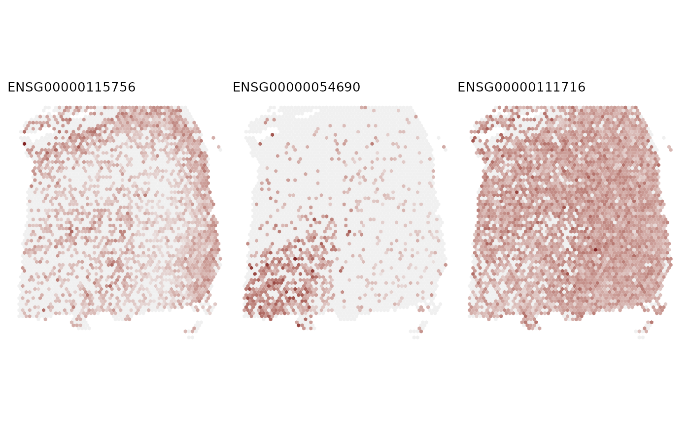

Plot spatial gene expression.
This function is a modified version of the FeaturePlot function from BayesSpace R package.
In comparison to the original BayesSpace function, this function allows plotting multiple genes simultaneously
and drawing an outline around a specified cluster.
Usage
FeaturePlot(
spe,
feature,
coordinates = NULL,
concave_hull = FALSE,
sf_dim = 200,
assay.type = "logcounts",
annotation_cluster = FALSE,
annotation_title = NULL,
platform = "Visium",
cluster_col = NULL,
cluster = NULL,
legend_cluster = FALSE,
legend_exprs = FALSE,
diverging = FALSE,
low = NULL,
high = NULL,
mid = NULL,
color = NULL,
linewidth = 0.4,
linecolor = NULL,
label = FALSE,
ncol = 3,
title = FALSE,
title_size = 10,
point_size = 0.5
)Arguments
- spe
SpatialExperiment or SingleCellExperiment. If
featureis specified and is a string, it must exist as a row in the specified assay ofspe.- feature
Feature vector used to color each cell. May be the name of a gene/row in an assay of
spe, or a vector of continuous values.- coordinates
Column names for the spatial coordinates of cells stored in
colData(spe). If specified, these coordinates will be used. If not, the function defaults to using 'row' and 'col' incolData(spe)if they exist. Otherwise, it will usespatialCoords(spe)if 'spe' is a SpatialExperiment object andspatialCoords(spe)is not NULL.- concave_hull
A logical value (TRUE or FALSE). If TRUE, the function uses `ggforce::geom_mark_hull()` to outline cluster boundaries (recommended for non-discontinuous clusters). If FALSE, `sosta::reconstructShapeDensityImage()` is used for complex cluster shapes. For Visium or ST platforms, `concave_hull` is automatically set to TRUE.
- sf_dim
A numeric value for the x-dimension of the reconstruction (default is 200). A lower value speeds up computation but reduces accuracy. Used only when `concave_hull` is FALSE.
- assay.type
String indicating which assay in
spethe expression vector should be taken from.- annotation_cluster
A logical value (TRUE or FALSE). If TRUE, annotated spatial clusters are plotted alongside expression plots. If FALSE, clusters are not displayed.
- annotation_title
A character string for the title of the annotated spatial clusters. Applied only when `annotation_cluster` is TRUE.
- platform
A character string specifying the spatial sequencing platform. If "Visium" or "ST", a hexagonal spot layout will be used. Otherwise, points will be plotted.
- cluster_col
Column name of spatial clusters in
colData(spe).- cluster
Names of the spatial clusters used for drawing a boundary around a group of points that belong to the specify cluster. It can be NULL, "all"/"ALL", or a vector of cluster names.
- legend_cluster
A logical value. TRUE of FALSE, indicating whether to plot the legend for the shaped clusters (TRUE), or not (FALSE). Only used when 'cluster_col' and 'cluster' are specified.
- legend_exprs
A logical value. TRUE of FALSE, indicating whether to plot the legend for the expression level (TRUE), or not (FALSE).
- diverging
A logical value. If TRUE, uses a diverging color gradient in
FeaturePlot(e.g., for fold change). If FALSE, uses a sequential gradient (e.g., for expression).- low, mid, high
Optional hex codes for low, mid, and high values of the color gradient used for continuous cell values.
- color
Optional hex code to set color of borders around cells. Set to
NAto remove borders.- linewidth
The width of the boundary line around the cluster. The default ('0.4') size of the boundary line is one.
- linecolor
The colors of the boundary lines around the cluster. If unspecified, the default color scheme is used.
- label
A logical. TRUE of FALSE. Adding a label and an arrow pointing to a group.
- ncol
The dimensions of the grid to create. By default, 1, if the length of feature equals to 1, and 3, otherwise.
- title
A logical. TRUE or FALSE. If true, the title name of each (subplot) is the gene name.
- title_size
Title font size.
- point_size
Point size.
Examples
# load the input data:
data("LIBD_subset", package = "DESpace")
# load pre-computed results (obtained via `svg_test`)
data("results_svg_test", package = "DESpace")
# Visualize the gene expression of the top three genes
feature = results_svg_test$gene_results$gene_id[seq_len(3)]
FeaturePlot(LIBD_subset, feature, coordinates = c("array_row", "array_col"),
ncol = 3, title = TRUE)
